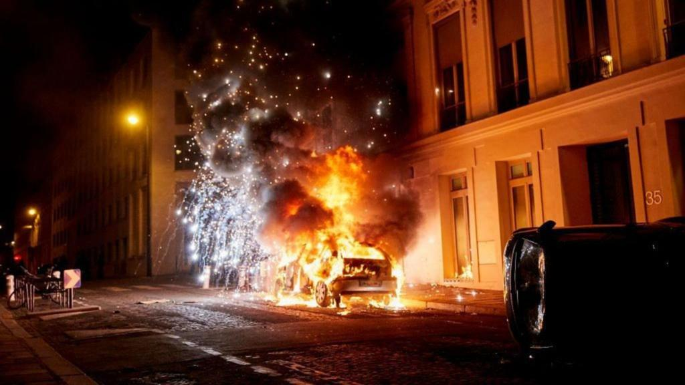

Football's Global Impact
Football reaches across borders and habits. From bars filled, streets humming with life, to stadiums rising with the noise of the fans. People follow a club or a player with pride and loyalty, accepting the cost it might have. The pull of the sport is simple: to win. To hold a trophy in the air and mark a date in history forever. Some nights still unsettle that idea. A win does not always bring a shared victory for everyone who lives with the result.
The match
On 31 May 2025, Paris Saint-Germain (PSG) beat Inter Milan 5-0 in Munich. Five goals in a final is extremely rare. The match tilted early and never really returned to balance. Inter lost control of space, and perhaps even the spirit of the team. Paris created angles and finished with calm, playing like they were unstoppable. The result brought the club their first European title. It also set a record for the most goals in a Champions League final. The night also ended PSG’s long chase for status as a top club in European and world football. [1]

Celebrations in France, however, told a very different story. Crowds gathered on the famous Champs-Élysées and around Parc des Princes, PSG’s home stadium. Police lines formed; tear gas and water cannons were in place. The Interior Ministry reported two deaths in separate incidents — a road collision in Paris and a stabbing in Dax. At least 192 people were injured. More than 500 were arrested nationwide, including 491 in Paris. A police officer entered an induced coma after a firework strike during a gathering in Coutances. These figures turned the celebration of a great achievement into a publicsafety event with significant harm and damage inflicted.[2][3][4]
One win, two roads
The concept is simple: one win sets off two very different stories at once. For the club — status, new reach, and above all revenue. For the city — damage, repairs, and safety concerns. Big crowds with passion and a lot of emotion. Alcohol blurring people’s judgment. Most people sing and celebrate before going home; a few push too far. Streets and squares are filled through the night. Open areas draw crowds. Narrow streets compress flow and raise tension. Solid policing and thorough planning limit damage; however, there are always weak spots magnifying the harm. Joy and harm share the same map on nights like this. Was the win truly a victory?
A pattern over time
France has a pattern like this for major sporting nights. During the 2018 World Cup celebrations, Paris police reported
arrests after clashes near central routes. Public-order measures cleared hotspots when windows broke and crowds pressed forward.
These episodes show a pattern over time in French football culture. During the day it’s a celebration, but at night the
pressure and emotions are let out, then a major clean-up in the morning.[5]
Authorities also adjusted for finals after these events. Before the Club World Cup final in July 2025,
the Interior Minister announced strict controls, including a ban on gatherings on the Champs-Élysées.
Police had 11,500 officers in Paris and around 53,000 across all of France. The goal was to prevent a repeat of the worst scenes
after the Champions League win and to manage a big, riled-up crowd. Planning moved from celebration management
to risk containment in the city’s most symbolic and historical areas.[6]
Beyond France
Similar events have appeared outside France, not just limiting it to one country or culture. Naples 2023 shows the same kind of difficulties. Napoli won the league and the city flooded the streets in celebration. One man died from gunshot wounds. Dozens were injured in separate incidents as fireworks and traffic mixed with big crowds. Local officials later linked the fatal shooting to the local mafia, the Camorra, not to the celebrations. A title night gathers crowds and emotion in one place. Old disputes and risks sit in the same space.[7][8][9]
Follow the money
Money flows in different directions on the same night. The club receives prize payments and new leverage with partners. Global attention lifts shirt sales and ticket demand. International reach grows. The city pays overtime for police and sanitation. Crews repair bus shelters and sweep glass from pavements. Shop owners face repairs and lost open hours. Hospitals log a significant increase in burns and fractures within a short window. Compare the gains and the costs side by side to see the full effect attached to a single football match.
Sources:
- ESPN match report
- Reuters: Two dead, 500 arrested
- Reuters: Paris erupts in celebration
- CBS News: Celebrations turn violent
- RFI: 2018 World Cup celebrations
- AP News: Security measures for Club World Cup
- ANSA: Mayor says death unrelated to celebrations
- The Guardian: Mafia-linked shooting
- Reuters: One dead, seven injured